-

Full Bird Hydration
A sports drink company whose entire flavor lineup is Thanksgiving dinner.
More about Full Bird Hydration
Full Bird Hydration makes electrolyte drinks for "serious athletes with serious appetites," offering flavors like Turkey & Gravy Surge, Cranberry Stuffing Splash, Green Bean Casserole Chill, and a limited holiday release called Giblet Blast. Every bottle promises "22 grams of electrolytes and the unmistakable essence of a food coma." The company sponsors competitive eaters and one very confused marathon runner.
-

Grudge Granite
A memorial engraving company that carves the deceased's unresolved grudges into their headstones.

More about Grudge Granite
Grudge Granite is a family-owned monument company that lets clients pre-register their complaints — the neighbor who never returned the ladder, the brother-in-law who "knows what he did" — to be permanently engraved on their tombstone. Premium packages include footnotes, a second-side "continued..." panel, and an annual grave-side reading service so the grudge is never forgotten.
-

Sure Roll Dice Co.
An artisanal dice maker whose handcrafted dice have the same number on every face.
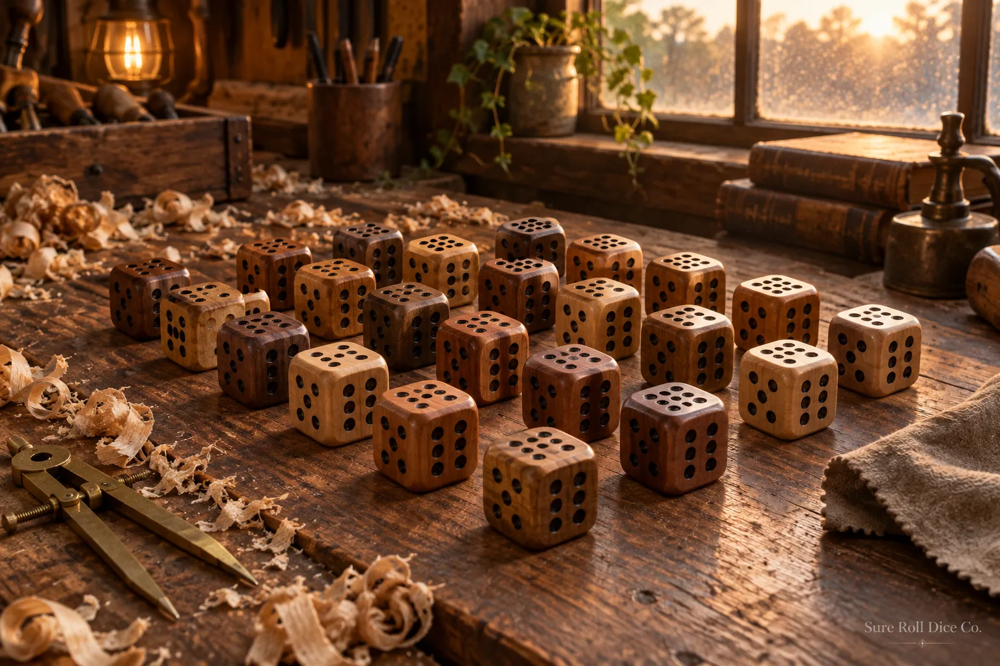
More about Sure Roll Dice Co.
Sure Roll Dice Co. sells premium hardwood and resin dice "for people who hate uncertainty." Every die is hand-polished, individually numbered, and guaranteed to roll the number printed on all six sides. The catalog includes the Confidence Six, the Humble One, and a $200 collector's set of all six values "so you're prepared for any outcome you already chose." Returns are not accepted because "you knew exactly what you were getting."
-

Second Wind Air Cellars
A subscription service that ships members a monthly jar of artisanal air from exotic locations.
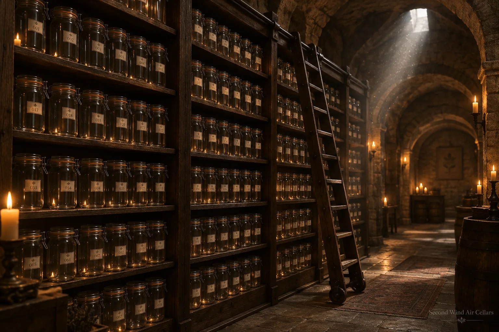
More about Second Wind Air Cellars
Second Wind Air Cellars is a "boutique atmospheric sommelier house" that bottles air from destinations like a Swiss alpine meadow, a Portland coffee shop at 7 a.m., and the parking lot of a mid-tier casino. Members receive a jar each month with tasting notes ("bold notes of pine, a lingering finish of regret") and access to the Cellar Club, where vintage jars — including the coveted 2019 Pre-Everything Reserve — trade at auction. An add-on freshness plan sends a technician to re-tighten your lids quarterly.
-

Hank & Sons Reactor Barn
A folksy, family-owned small-town shop that designs and builds nuclear reactors.
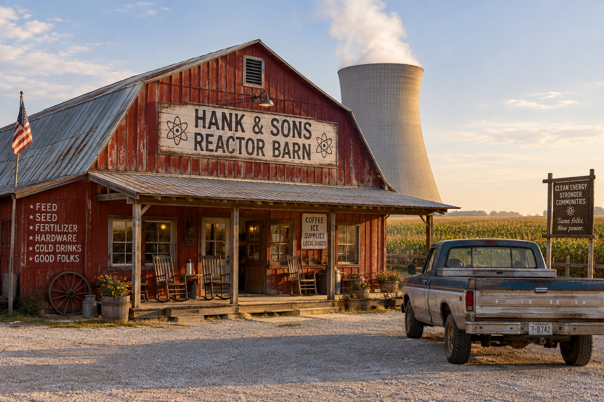
More about Hank & Sons Reactor Barn
Operating out of a converted feed store in rural Nebraska, Hank & Sons Reactor Barn has been "keepin' the neutrons flowin' since 1987." Hank Sr. handles the thermal hydraulics, Hank Jr. runs the front counter, and cousin Denise does containment domes on weekends. The shop offers free coffee, a punch card (tenth reactor is half off), and a hand-painted sign reading "If we can't fission it, it can't be fissioned." They do not have a website; you have to call, and Hank answers.
-

Murky Springs Soda Co.
A craft soda company whose small-batch flavors are all liquids nobody ever wanted to drink.

More about Murky Springs Soda Co.
Murky Springs Soda Co. is a Pacific Northwest craft soda house offering carbonated takes on Hot Dog Water, Public Pool, Aquarium Gravel, and their best-seller, New Tire Smell. Each bottle is cold-filtered, cane-sugar sweetened, and comes with pairing suggestions ("New Tire pairs beautifully with a long wait at the DMV"). Their seasonal release, Rain Gutter Reserve, sells out every fall to people who insist they're buying it ironically.
-
More about Waxing Nostalgic
Waxing Nostalgic operates donation centers in twelve states where "wax benefactors" contribute their earwax in exchange for store credit. The wax is pooled, filtered, and hand-poured into scented candles with names like Sunday at Grandma's, Locker Room Memories, and Q-Tip Confessional. The company insists the product is "the most personal ambiance on the market" and offers a premium single-origin line sourced from one very committed donor named Gary.
-
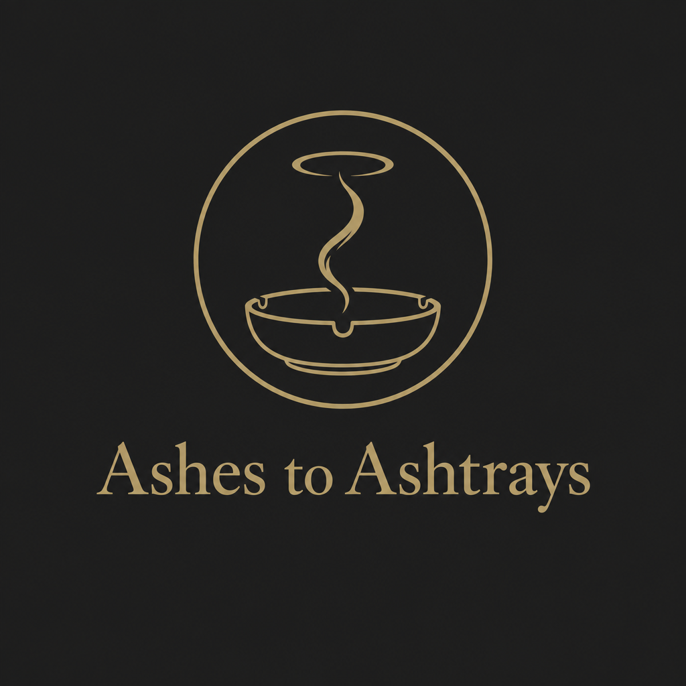
Ashes to Ashtrays
A memorial studio that turns your loved one's cremated remains into a decorative ashtray.
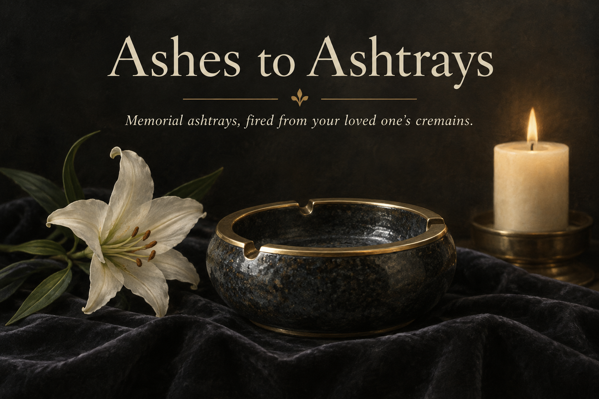
More about Ashes to Ashtrays
Ashes to Ashtrays is a "legacy ceramics studio" that kiln-fires cremains into handsome ashtrays, so the departed can "keep holding your ashes, like they always said they would." Options include the Poetic Justice model for relatives who warned you about smoking, a matching coaster set for the whole estate, and an heirloom program that adds each new generation to the same growing ashtray. The showroom has a wall of testimonials no one has ever read aloud without pausing.
-

HOV Buddy
A rental service supplying realistic mannequin passengers for carpool-lane commuters.
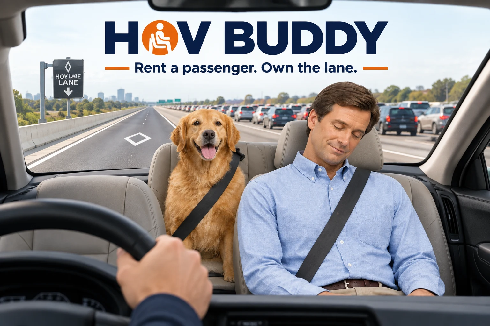
More about HOV Buddy
HOV Buddy rents hyper-realistic passengers by the week so solo drivers can "carpool with confidence." The lineup includes Nodding Greg, Sleeping Aunt Carol, and the deluxe Conversational Dave, whose head turns at stoplights. Plans include seasonal outfit swaps, a "traffic stop protection plan" that the terms of service admit protects nothing, and an emergency hotline that only plays hold music. The website's legal page is a single shrug emoticon.
-
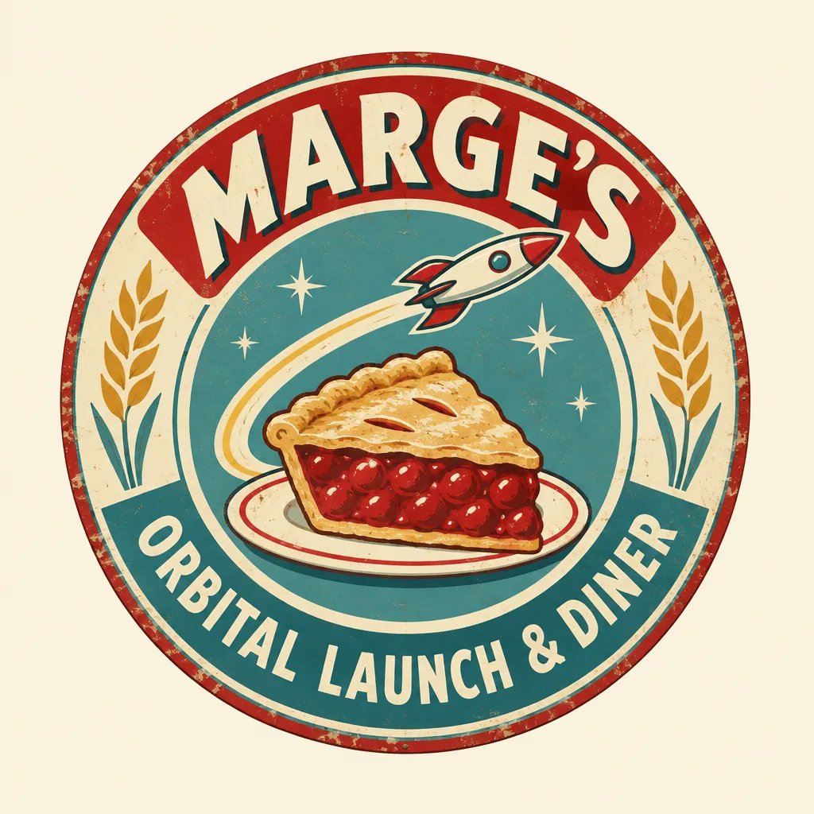
Marge's Orbital Launch & Diner
A roadside Kansas diner that also provides commercial satellite launch services.
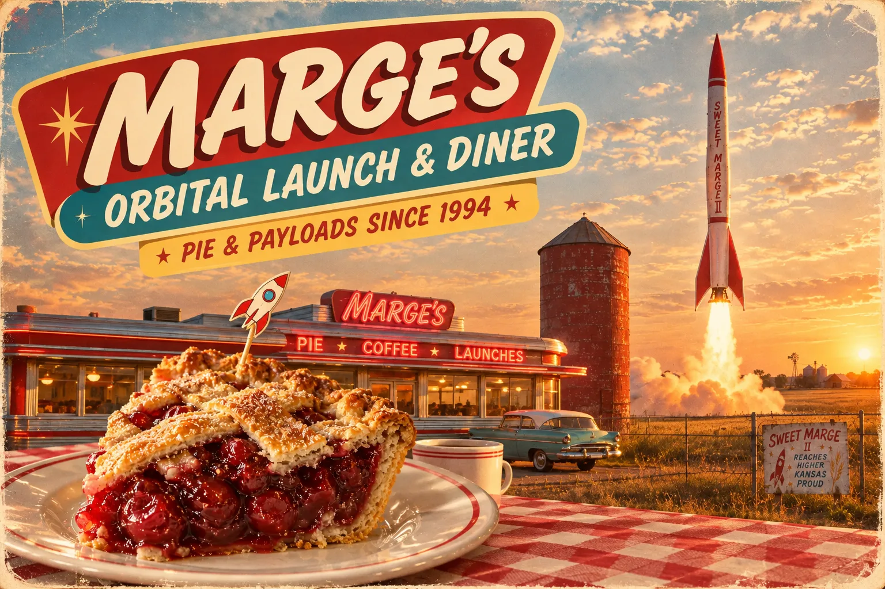
More about Marge's Orbital Launch & Diner
Marge's Orbital Launch & Diner has been serving pie and low-Earth-orbit insertions off Route 56 since 1994. Marge handles trajectory calculations between refilling coffees, her husband Bill runs the launch pad out back behind the grain silo, and Tuesday's special is meatloaf with a free payload inspection. The menu laminate includes a delta-v chart, launches are scheduled "weather and church permitting," and regulars know to ask for booth six, which rattles the least during liftoff.
-

Mist O' Meat
An As-Seen-On-TV aerosol spray that gives any food the flavor of pot roast.
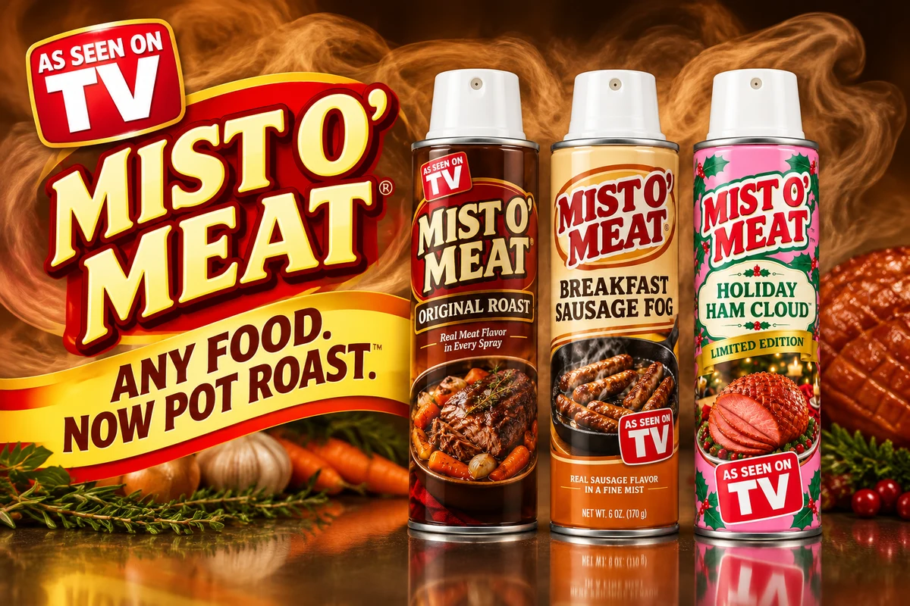
More about Mist O' Meat
Mist O' Meat is "the flavor revolution grandma never asked for": a pressurized can of concentrated pot roast essence that transforms cereal, fruit salad, or a birthday cake into a hearty meat experience. The pitch hits every direct-response beat: a black-and-white "before" clip of a family staring sadly at unsprayed yogurt, a countdown timer that resets when it hits zero, a testimonial from Doug in Ohio who has misted every meal since March, and the inevitable offer to double your order for just the cost of shipping and handling. Flavors include Original Roast, Breakfast Sausage Fog, and the limited Holiday Ham Cloud.
-
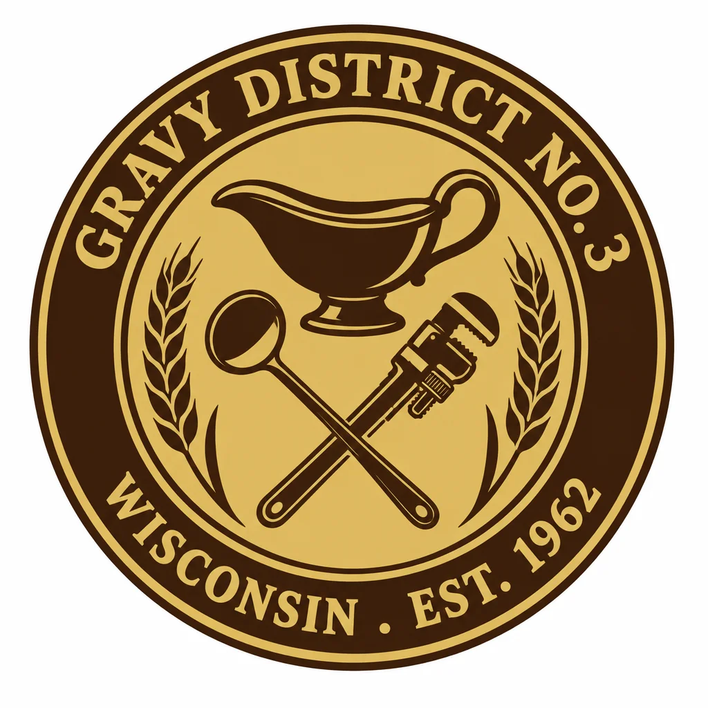
Gravy District No. 3
The public gravy utility serving three townships in rural Wisconsin.
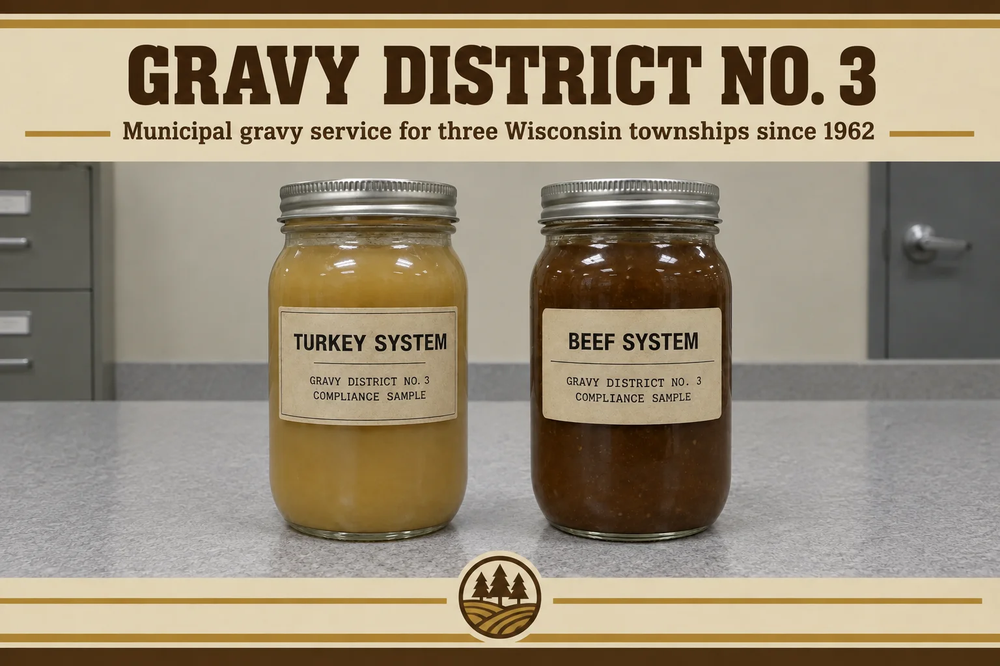
More about Gravy District No. 3
Established by county referendum in 1962, Gravy District No. 3 delivers municipal gravy to 4,100 households through 61 miles of insulated brown mains. The site offers everything a ratepayer needs: an outage map ("crews are responding to a lump event on County Road H"), seasonal rate schedules with a Thanksgiving surge tariff, annual gravy quality reports, and minutes from the monthly Board of Gravy Commissioners meeting, which routinely runs four hours due to public comment. Residents are reminded that turkey and beef are separate systems and cross-connection is a Class B ordinance violation.
-

The Cul-de-Sac Courant
A hard-hitting subscription newspaper covering the eight houses of one suburban cul-de-sac.
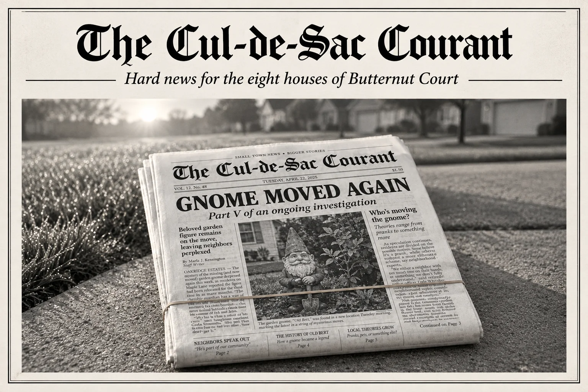
More about The Cul-de-Sac Courant
The Courant is the paper of record for Butternut Court, delivering fearless investigative journalism about its eight households since 2011. Recent front pages include a five-part series on who keeps moving the Hendersons' gnome, live coverage of the Kowalskis' new mailbox, and an explosive exposé on the true start time of the Fourth of July potluck. The site has a metered paywall (three articles a month, and everyone on the street has hit it), breaking-news push alerts, an opinion section written entirely by one retiree, and a corrections page longer than most issues.
-

Alibi & Associates
A white-shoe professional firm that crafts bespoke excuses for getting out of social obligations.
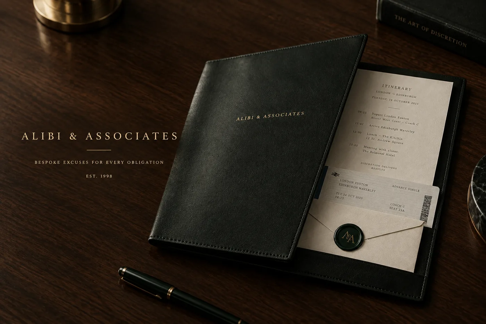
More about Alibi & Associates
Alibi & Associates has quietly served discerning clients since 1998, engineering airtight exits from weddings, baby showers, work retreats, and "quick calls that could have been emails." The firm's site features solemn practice-area pages (Weddings & Destination Events, Recurring Obligations, Last-Minute Extractions), partner bios listing decades of experience and signature work ("Margaret pioneered the double-booked dental appointment"), and a confidential intake form. Retainer clients receive a 24-hour excuse hotline and one free corroborating witness per calendar year. The firm never confirms nor denies any engagement.
-
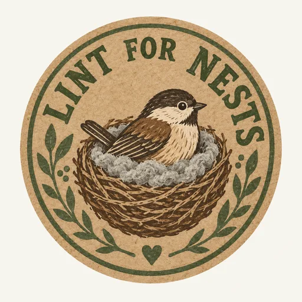
Lint for Nests
A nonprofit that collects donated belly button lint to insulate nests for orphaned songbirds.
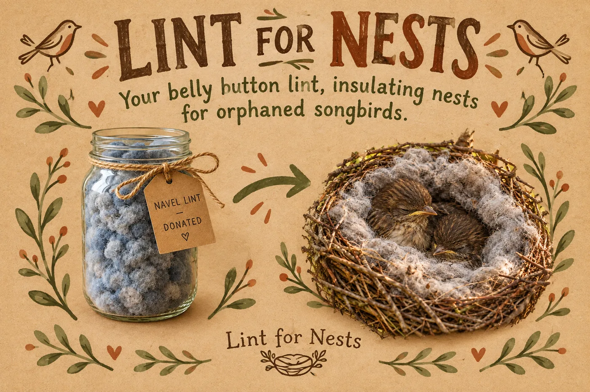
More about Lint for Nests
Lint for Nests is a 501(c)(3) fiber-recovery charity whose volunteers collect, sort, and sanitize donated navel lint at drive-up Lint Drives in church parking lots across the Midwest. The site features an impact thermometer ("41 pounds recovered this quarter"), heartbreaking rescue stories with before-and-after nest photos, and giving tiers from Lint Friend to the prestigious Golden Navel Circle. Monthly sustaining donors receive a newsletter, a window decal, and a personalized certificate naming a warbler after them. The FAQ patiently explains, twice, why the lint must come from a navel.
-

Perfectly Balanced Dice Co.
A dice maker whose enormous, lopsided dice have anywhere from 2 to 104 sides and are carved from wood, rock, or plastic.
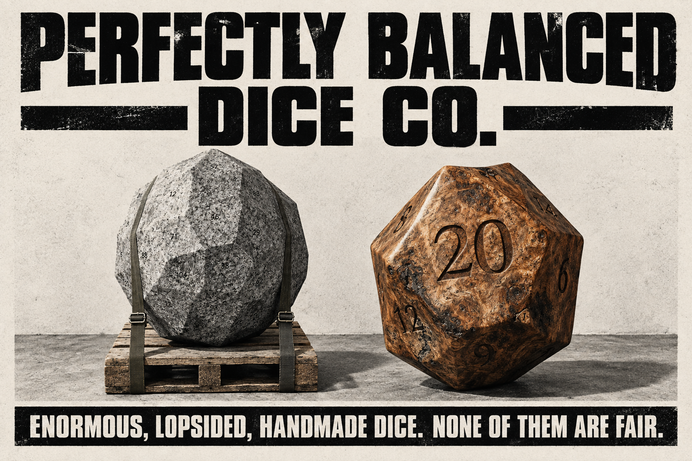
More about Perfectly Balanced Dice Co.
Perfectly Balanced Dice Co. hand-produces "statistically liberated" dice that reject everything dice are supposed to be: uniform, balanced, or holdable in one hand. The catalog runs from the Skipping Stone (a d2 that resolves nothing near water) through the Splinter (a pine d7 that lands on an unnumbered eighth face a third of the time) up to the Erratic d104, a 40-pound granite polyhedron that ships freight and doubles as a doorstop. Every die ships with a Fairness Report that says "No," and dice over 20 pounds should be rolled from a seated position. The name is the company's boldest lie.
-

Fines & Dandy
A premium cereal brand that sells only the crumb dust from the bottom of the bag.
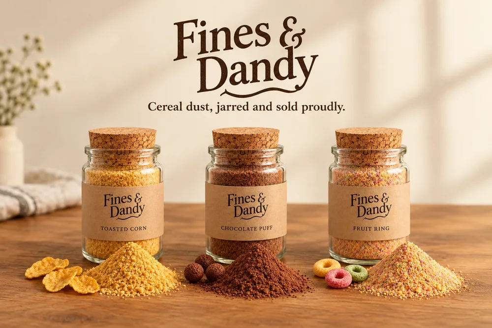
More about Fines & Dandy
Fines & Dandy harvests the crumb dust that settles at the bottom of every cereal bag, screens it in partner "settling rooms," and jars it in six single-origin varieties with full tasting notes ("forward notes of toasted corn, a lingering finish of bag"). The site offers pairing recipes for milk, yogurt, and dry-by-the-handful, a Bottom Shelf Club subscription, wholesale sweepings by the pail, and a store locator whose every result ends with the bottom shelf. The FAQ addresses the marshmallow question with visible fatigue, and refund requests citing "the dust had settled" are read aloud at company meetings.
-

The Parting Shot
A high-end photography studio specializing in divorce shoots.
More about The Parting Shot
The Parting Shot brings the full wedding-photography treatment to the other end of the arc: editorial coverage of the signing day, "first look at the paperwork" sessions, courthouse-steps portraiture, and commemorative albums printed in identical duplicate so neither party can claim the original. Package tiers run from the single-session Decree in Golden Hour to The Complete Proceedings, a full day of coverage that poses both attorneys like a small bridal party. The portfolio is presented in the hushed, reverent tone of a fine-art wedding studio, applied without comment to its subject, and the studio's record of two mid-shoot reconciliations is mentioned with quiet pride.

No businesses match. Try a different search, or lower your standards further.